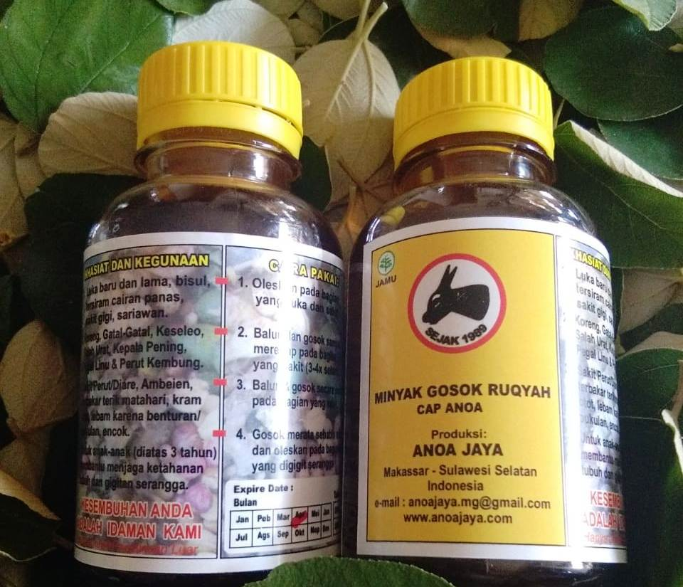

Testimoni

Read More
Posted on: September 6, 2022
Posted by: admin
Comments: 0
Minyak ANOA, Cahaya Gadis Remaja: Bermanfaat Serba Guna
Minyak ANOA Bermanfaat serba guna bagi Cahaya, gadis belia berbagi pengalaman. BACA JUGA: Minyak ANOA Bikin Pulas Emak Emak Bloger Simak berbagi pengalaman sang gadis asal Tarakan ini di kanal youtube Minyak Anoa: Penting Diketahui: Hasil pada orang bisa berbeda-beda. tergantung: Gaya Hidup Riwayat Sakit dan Metabolisme Tubuh. Nonton Video Youtube Pengalaman lain: YOUTUBE MINYAK ANOA ANOA01